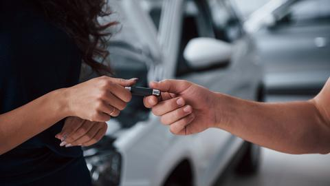

BMW · Kielce i okolice
Kluczyk BMW w Kielcach – dorabianie i kodowanie, także Comfort Access
Kluczyk BMW to nie tylko pilot – w wielu modelach auto przypisuje do niego także ustawienia kierowcy. Dorabiamy i kodujemy kluczyki BMW, także z Comfort Access, i pomagamy, gdy zgubiony kluczyk był jedynym – na miejscu, w Kielcach i pobliskich miejscowościach.
Kluczyk BMW – od serii E po generacje F i G
W BMW rodzaj kluczyka wiele mówi o tym, jak wygląda jego dorabianie. W uproszczeniu:
| Przykładowe modele | Rodzaj kluczyka | Na co zwrócić uwagę |
|---|---|---|
| starsze generacje, np. seria 3 E46, seria 5 E39 | kluczyk z grotem i pilotem w główce | w wielu egzemplarzach akumulatorek w kluczyku ładuje się w stacyjce podczas jazdy – nie wymienia się go jak zwykłej baterii |
| np. seria 3 E90, seria 5 E60 | kluczyk wkładany do gniazda w desce, silnik uruchamia przycisk Start/Stop; opcjonalnie Comfort Access | bez Comfort Access – akumulatorek ładowany w gnieździe; z Comfort Access – bateria do okresowej wymiany |
| generacje F i G, np. F10, F30, G20, G30 | kluczyk, który wystarczy mieć w aucie, z wyjmowanym kluczem awaryjnym; z Comfort Access drzwi otwierają się bez sięgania do kieszeni | bateria wymienna, najczęściej CR2032 – typ potwierdź w instrukcji |
| część nowszych modeli | BMW Display Key z ekranem albo kluczyk cyfrowy w smartfonie | kluczyk cyfrowy konfiguruje się w aplikacji producenta – my zajmujemy się kluczykami fizycznymi |
Granice między generacjami nie są ostre, a wiele zależy od wyposażenia konkretnego egzemplarza. Dlatego o dobór kluczyka pytamy po numerze VIN, a nie tylko po nazwie modelu.
Kiedy kluczyk BMW zaczyna zawodzić
- pilot w starszym BMW działa coraz słabiej – akumulatorek ładowany w stacyjce lub gnieździe z wiekiem traci pojemność i nawet długa trasa go już nie „naładuje”,
- komunikat o niewykrytym kluczyku albo Comfort Access, który przestaje otwierać drzwi – najpierw podejrzewaj baterię, ale winny bywa też uszkodzony kluczyk lub silne zakłócenia radiowe w pobliżu,
- pęknięta obudowa i wytarte przyciski – zwłaszcza gdy kluczyk latami nosi się w jednej kieszeni z kluczami do domu,
- kluczyk po zalaniu lub upadku – grotem albo kluczem awaryjnym otworzysz drzwi, ale silnik nie rusza,
- jeden kluczyk w używanym BMW – zdarza się, także w autach sprowadzanych z zagranicy, że drugi egzemplarz zaginął po drodze.
Nie każdy z tych kłopotów oznacza nowy kluczyk. Jeśli auto nadal uruchamia się z kluczykiem, a zawodzi tylko zdalne otwieranie, często wystarcza naprawa – więcej w artykule pilot od auta nie działa.
Dorabianie i kodowanie kluczyka BMW – jak to przebiega
Przy BMW zaczynamy od rozmowy, a nie od przyjazdu:
- Telefon lub SMS z numerem VIN – ustalamy generację, rodzaj kluczyka i to, czy auto ma Comfort Access.
- Odpowiedź, czy się podejmiemy – w części BMW nowy kluczyk zapisuje się stosunkowo sprawnie, w innych praca jest dłuższa i bardziej złożona, a w najnowszych autach możliwości zależą od rocznika i oprogramowania. Mówimy to przed przyjazdem, razem z ceną.
- Weryfikacja na miejscu – zanim cokolwiek zaczniemy, sprawdzamy dowód osobisty i dowód rejestracyjny; bez nich nie otwieramy auta ani nie kodujemy kluczyka.
- Wykonanie kluczyka – zapasowego albo nowego po utracie wszystkich; zgubione egzemplarze usuwamy z pamięci auta (programowanie kluczy, utrata wszystkich kluczyków).
Poza nowymi kluczykami wymieniamy obudowy i naprawiamy piloty, gdy elektronika kluczyka jest sprawna, otwieramy zamknięte BMW bez uszkadzania drzwi i szyb (otwieranie samochodów) oraz zajmujemy się immobilizerem i sterownikiem, gdy auto mimo dobrego kluczyka nie chce ruszyć (sterowniki i immobilizery). Jeśli w Twoim aucie rozsądniejszą drogą okaże się serwis dealerski, powiemy to wprost – porównanie obu dróg znajdziesz w artykule ASO czy specjalista.
Co przygotować, zanim zadzwonisz w sprawie BMW
- numer VIN (pole E w dowodzie rejestracyjnym),
- zdjęcie kluczyka z obu stron – po kształcie i układzie przycisków łatwo rozpoznać generację,
- informację, czy auto ma Comfort Access, czyli otwiera się po dotknięciu klamki bez wyjmowania kluczyka,
- wszystkie kluczyki, które mają działać dalej – także te z niesprawnym pilotem,
- upoważnienie, jeśli BMW jest firmowe lub w leasingu.
Kupiłeś BMW z jednym kluczykiem? Warto ustalić, kto jeszcze może mieć dostęp do auta – podpowiadamy to w artykule kluczyki w używanym aucie – co sprawdzić.
Wskazówki dla kierowców BMW
Auto nie wykrywa kluczyka
Instrukcje wielu modeli BMW opisują uruchomienie awaryjne: przyłóż kluczyk do oznaczonego miejsca na kolumnie kierownicy i, gdy auto go rozpozna, w ciągu kilku sekund naciśnij Start/Stop z wciśniętym hamulcem lub sprzęgłem. Dokładne miejsce i sposób przyłożenia kluczyka zależą od modelu – sprawdź je w instrukcji, zanim będą potrzebne.
Nowy kluczyk a ustawienia kierowcy
W BMW z funkcją Personal Profile część ustawień – m.in. pozycja fotela kierowcy i lusterek w autach z pamięcią – zapisuje się dla kluczyka, którym otwierasz auto. Nowo zakodowany kluczyk może więc nie mieć Twoich ustawień; zapiszesz je ponownie tak, jak opisuje instrukcja. To normalne, a nie usterka.
Comfort Access jest wygodny, ale kluczyk z tą funkcją przechowuj w domu z dala od drzwi wejściowych. Sposoby ochrony opisujemy w artykule kradzież „na walizkę”.
Usługi dla aut BMW

Otwieranie samochodów
Kluczyki zamknięte w kabinie lub bagażniku, rozładowany akumulator, zamek, który nie reaguje – otwieramy auto całą dobę.
Szczegóły
Dorabianie i kodowanie kluczy
Zapasowy kluczyk z chipem, pilot, keyless – dorabiamy i kodujemy, a zgubione kluczyki usuwamy z pamięci auta.
Szczegóły
Utrata wszystkich kluczyków
Nie został żaden kluczyk? Otwieramy auto, przygotowujemy i kodujemy nowy, a zgubiony usuwamy z pamięci.
Szczegóły
Sterowniki i immobilizery
Auto nie odpala lub nie widzi kluczyka – naprawa i wymiana sterownika silnika, prace przy immobilizerze.
SzczegółyPytania i odpowiedzi
Pilot w moim starszym BMW prawie nie działa. Czy wystarczy wymienić baterię?
Czy zrobicie kluczyk z Comfort Access?
Nie został mi żaden kluczyk do BMW. Od czego zacząć?
Czy zakodujecie kluczyk cyfrowy w telefonie?
Ile kosztuje dorobienie kluczyka BMW?
Przydatne porady
 Kluczyki samochodowe
Kluczyki samochodowePilot od auta nie działa – najczęstsze przyczyny i co zrobić
Pilot od auta nie działa, a Ty stoisz przy zamkniętym samochodzie? Zanim zaczniesz się martwić, sprawdź kilka prostych rzeczy – wiele usterek rozwiążesz sam w kilka minut.
Czytaj · 4 min Kluczyki samochodowe
Kluczyki samochodoweKluczyk keyless nie działa – co sprawdzić, zanim wezwiesz pomoc
Kluczyk keyless nie działa, a auto nie reaguje na klamkę ani przycisk START? Zanim pomyślisz o poważnej awarii, sprawdź kilka rzeczy – często winna jest bateria albo zwykłe zakłócenia.
Czytaj · 5 min
Kluczyki samochodoweDorabianie kluczyków samochodowych – w ASO czy u specjalisty?
Dorabianie kluczyków samochodowych możesz zlecić autoryzowanemu serwisowi albo niezależnemu specjaliście. Obie opcje mają mocne strony – porównujemy je uczciwie, żebyś wybrał to, co pasuje do Twojej sytuacji.
Czytaj · 4 minInne marki
Nazwa marki BMW służy wyłącznie do opisu, do jakich aut wykonujemy usługi. Nie jesteśmy autoryzowanym serwisem tej marki.
Potrzebujesz pomocy teraz?
Zadzwoń – powiemy, ile to potrwa i ile będzie kosztować, zanim wyjedziemy.